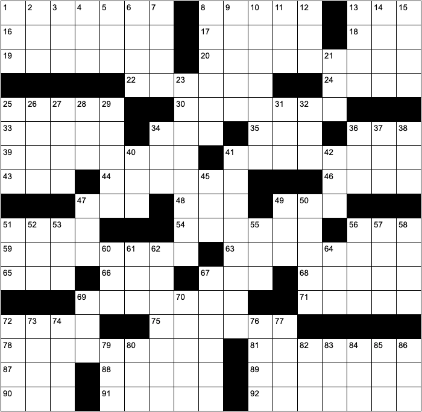
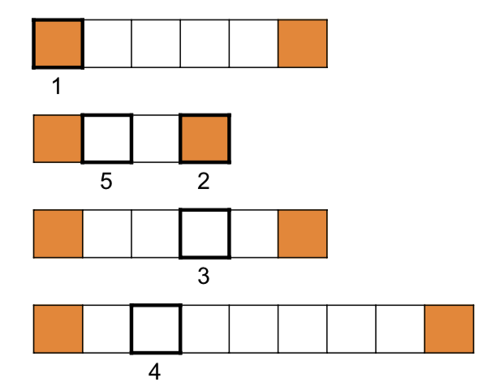

Home
About
Story
Puzzles
Teams
Updates
Wrap-Up
Check your answer spoiler-free
View solution
Stats
Wah-taburger
Copyable spreadsheet available (opens new tab)


Across
1. Turns paper back into previous form
8. So bad it's good
13. Problem for a mafia boss
16. What you might do at Thanksgiving dinner
17. Ten-member organization including Singapore (abbr.)
18. Green
19. Request in Lord's Prayer
20. Like a Hilbert curve
22. "The Battle of the Five ___"
24. Root or leaf in a CS tree, for example
25. Evening or morning star
30. Yearly payment
33. Justice Kagan
34. Favoring
35. Resident of the Hundred Acre Wood
36. Substance produced by cellular respiration (abbr.)
39. Earner
41. What you might get to treat a cavity
43. What you're trying to get from this puzzle (abbr.)
44. Continent with second-largest population
46. More uncommon than uncommon
47. Cousin of late night's Jimmy
48. Grain
49. How to quote a typo
51. Most quickly (abbr.)
54. ___ Joe's
56. Part of trigonometry mnemonic (abbr.)
59. The Great Plains, to the US
63. Way to get rid of a hole
65. What 82-Down is a type of
66. Animal noise in
this video
67. It's left of Q
68. It's found int his clue
69. Method of information transport
71. Put off
72. Island country straddling the antimeridian
75. Civet relatives
78. What you're doing to this grid
81. Bland
87. Shock and ___
88. It's subpar?
89. Bestows (e.g., with wisdom)
90. "___ me with a spoon"
91. Sense
92. Where to find the Maid of the Mist
Down
1. Fishing pole
2. Argentine Perón
3. Architect I.M.
4.
https://google.com
or
https://wikipedia.org
, for example
5. ___ lines (alignments between ancient structures)
6. Father
7. Not shake
8. It's easy to find one in 13-Down
9. Colorado ski town or its common tree
10. Find size of
11. ___-Man (game)
12. Triple-bond suffix
13. City near Lake Tahoe
14. Opposite of base
15. Ring ___ or ___-deaf
21. Prefix with "one" or "where"
23. Nice place to sleep on a trip
25. Pole star 14 millenia ago
26. Owner of x.com (first name)
27. Breaking ___
28. Prefix with "form" or "verse"
29. Capital of an Arabian Peninsula country
31. Atom with positive or negative total change
32. Tater ___
34. Apiece
36. Prefix with "carte" or "mode"
37. Norse god identified with Mars
38. It can come before calculus or history
40. League with Jacksonville, Philadelphia and Seattle (abbr.)
41. Oracle or Scylla, for example
42. Part of a circle
45. Mode of transportation
47. It's often found at a hot spring
49. Small amount of time (abbr.)
50. Annoyed
51. Stingray's celestial location
52. NBC show (abbr.)
53. Nickname of an honest president
55. Small lump (of)
56. ___ the web (navigate through the Internet)
57. Woodwind instrument
58. German title
60. Baltic or Caribbean
61. Accompaniment to bra in quantum mechanics
62. Greek philosophical word for induction
64. Poetic before
67. It's built by one of 26-Down's companies
69. Something put on chips
70. Feel under the weather
72. It might be tricolor or quartered
73. State just west of the Mississippi River
74. Image format
76. One of a pair
77. Chosen one's mother
79. What to say to the dress
80. What might arise from wrinkled paper in a printer
82. Hoppy lager alternative (abbr.)
83. Children's game with "freeze" or "laser" variations
84. The current one is the Cenozoic
85. D&D statistic determining carrying capacity (abbr.)
86. NASA's counterpart located in Paris (abbr.)